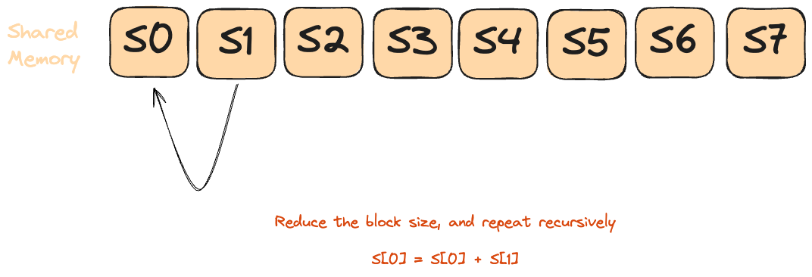

This blog will be updated with puzzle solutions as they’re released. Stay tuned for more updates!
After a super-long break from writing blogs, I’ve decided to get back to it this year.
I’ve always been interested in systems programming, but somehow never really picked it up. The rate of progress in the GenAI space has been exponential recently, with players like Google [1] reportedly processing 9.7 trillion tokens a month. Companies are now investing more time and resources interest in making these Large Language Modelsas fast and cheap as possible, by improving training and inference efficiency using “moar” compute.
I briefly spoke about GPU computing last year, and finally decided to learn it this summer. The goal is to eventually be able to implement kernels for fast matmuls, softmax, and FlashAttention.
Why Mojo?
I’ve tried learning Rust multiple times, along with a few stints of trying C, C++ and Zig, but I never really felt as comfortable in these languages as I do in Python and Elixir.
In early 2023, Modular announced Mojoüî•, a new systems-programming language promising:
- Python-like syntax
- Support for both CPU and GPU architectures
- Kernel autofusion
- Builds on MLIR
- Traits and bounds checking
- Interopeability with PTX, Python, C
Modular has since announced Max, their AI inference platform, built on Mojo. The released all kernels available as part of the platform, along with their own version[2] of Sasha Rush’s GPU Puzzles [3] in Mojo. IMO, their kernels were much easier to read compared to CUDA/Triton implementations, so I decided to learn a bit more about how to write these kernels.
GPUs 101
Not sure what to put in here. Skipping for now.


Infrastructure
If you plan on solving these puzzles, remember to pick a compatible GPU and follow the setup instructions
I completed the puzzles on a instance with a RTX4090 Ti chip, rented via Prime Intellect at 0.22 $/hr!
Part 1: GPU Fundamentals
The Modular team has created beautiful Manim visualizations for each puzzle, making the concepts much more intuitive. I’ll walk through these visualizations as we tackle each problem.
Puzzle 1: Map
In this puzzle, we aim to add a scalar to a vector. Specifically, we want to use a separate thread for each element in the vector, add the scalar, and write the result to the output memory.
When we create the kernel, the scalar will be effectively “broadcast” or expanded to match the shape of the input vector. This allows each element of the vector to be independently added with the scalar value in parallel by its dedicated thread, following the broadcasting rules.

Solution
p01.mojo
fn add_10(out: UnsafePointer[Scalar[dtype]], a: UnsafePointer[Scalar[dtype]]):
i = thread_idx.x
out[i] = a[i] + 10pixi run p01
# out: HostBuffer([10.0, 11.0, 12.0, 13.0])
# expected: HostBuffer([10.0, 11.0, 12.0, 13.0])Puzzle 2: Zip
This is an extension of the map puzzle. Now, we aim to add 2 tensors together.

As in puzzle 1, the aim is to use one individual thread for elements at a specific index in both vectors.

Note that we assume the entire array will fit within a single block, which is why there is no code for boundary checking, edge cases, etc.
Solution
p02.mojo
fn add(
out: UnsafePointer[Scalar[dtype]],
a: UnsafePointer[Scalar[dtype]],
b: UnsafePointer[Scalar[dtype]],
):
i = thread_idx.x
out[i] = a[i] + b[i]pixi run p02
# a: HostBuffer([0.0, 1.0, 2.0, 3.0])
# b: HostBuffer([0.0, 1.0, 2.0, 3.0])
# out: HostBuffer([0.0, 2.0, 4.0, 6.0])
# expected: HostBuffer([0.0, 2.0, 4.0, 6.0])Puzzle 3: Guards
The only difference between this puzzle and Puzzle 1 is that now it’s possible that the size of the GPU block is larger than the given input.
In GPU programming, “guards” refer to conditional statements that check if a thread should perform work based on its index. GPUs launch threads in fixed-size groups (blocks), and often these blocks contain more threads than elements in our array.
In this case, we need to check if the current thread index is valid before applying our computation on the vector. Without this guard, threads with indices beyond our array bounds would cause memory access violations.

The image above illustrates how some threads have indices that exceed the array size and must be prevented from accessing memory.
Solution
p03.mojo
fn add_10_guard(
out: UnsafePointer[Scalar[dtype]],
a: UnsafePointer[Scalar[dtype]],
size: Int,
):
i = thread_idx.x
if i < size:
out[i] = a[i] + 10Note that the size of the array is also sent as input to the kernel, as computing it in the kernel would defeat the purpose of parallelisation. While these conditional checks are necessary for correctness, they can introduce some performance overhead due to thread divergence within warps. We’ll cover this in more detail shortly.
pixi run p03
# in: HostBuffer([0.0, 1.0, 2.0, 3.0])
# out: HostBuffer([10.0, 11.0, 12.0, 13.0])
# expected: HostBuffer([10.0, 11.0, 12.0, 13.0])Puzzle 4: 2D Map
Similar to Puzzle 2, instead of operating on scalars with 1D tensors, we will now use 2D tensors.
Mojo, similar to CUDA, typically uses row-major order for array storage, meaning data is stored sequentially by rows in memory.

Given the row-major format, the elements are accessed using the formula:
\[ A_{R,C} = R*\text{size\_of\_array} + C \]
Raw Memory Approach
Solution
p04.mojo
fn add_10_2d(
out: UnsafePointer[Scalar[dtype]],
a: UnsafePointer[Scalar[dtype]],
size: Int,
):
row = thread_idx.y
col = thread_idx.x
if row < size and col < size:
out[row * size + col] = a[row*size+col] + 10pixi run p04
# in: HostBuffer([0.0, 1.0, 2.0, 3.0]) -- shaped as 2x2 row-major
# out: HostBuffer([10.0, 11.0, 12.0, 13.0])
# expected: HostBuffer([10.0, 11.0, 12.0, 13.0])LayoutTensor
LayoutTensor[4] is Mojo’s abstraction to work on a Tensor.
Specifically, LayoutTensor aims to provide:
- High level primitive to perform operations on tiles.
- Flexible memory layouts, with support for row-based, column-based and tiled organisation of data in memory.
- Expose functions/parameters to enable auto-tuning or manual experimentation.
- Access to hardware without inline assembly.
Mojo(and LayoutTensor) follow this “parameter syntax”[5], which is similar to how C++ templates are defined. This was a bit difficult for me to grasp since I don’t have a C++ background, and caused a few troubles in the upcoming puzzles. I was happy to learn that I’m not the only one struggling with it though![6] .

The features that looked most interesting to me are:
- Natural Indexing: Index a element using the format
A[row, col] - Automatic Bounds Checking: I’ve (ab)used this feature in the upcoming puzzles.
Some examples of LayoutTensor in practice:
layout_tensor.mojo
from layout import Layout, LayoutTensor
# Define layout
alias HEIGHT = 2
alias WIDTH = 3
alias layout = Layout.row_major(HEIGHT, WIDTH)
# Create tensor
tensor = LayoutTensor[dtype, layout](buffer.unsafe_ptr())
# Access elements naturally
tensor[0, 0] = 1.0 # First element
tensor[1, 2] = 2.0 # Last element
# Column-major layout
layout_col = Layout.col_major(HEIGHT, WIDTH)
# Tiled layout (for better cache utilization)
layout_tiled = tensor.tiled[4, 4](HEIGHT, WIDTH)Solution
p04.mojo
fn add_10_2d(
out: LayoutTensor[mut=True, dtype, layout],
a: LayoutTensor[mut=True, dtype, layout],
size: Int,
):
row = thread_idx.y
col = thread_idx.x
# NOTE: With layout tensor, this is not really necessary, but it helps prevent unwanted memory access
if row < size and col < size:
out[row, col] = a[row, col] + 10.0pixi run p04_layout_tensor
# in: HostBuffer([0.0, 1.0, 2.0, 3.0])
# out shape: 2 x 2
# out: HostBuffer([10.0, 11.0, 12.0, 13.0])
# expected: HostBuffer([10.0, 11.0, 12.0, 13.0])Puzzle 5: Broadcast
We aim to broadcast the addition operation over two vectors. Following the broadcasting rules, the result will be an outer-product of the given vectors.

Raw Memory Version
Solution
p05.mojo
fn broadcast_add(
out: UnsafePointer[Scalar[dtype]],
a: UnsafePointer[Scalar[dtype]],
b: UnsafePointer[Scalar[dtype]],
size: Int,
):
row = thread_idx.y
col = thread_idx.x
if row < size and col < size:
out[row*size + col] = a[row] + b[col]pixi run p05
# in a: HostBuffer([0.0, 1.0])
# in b: HostBuffer([0.0, 1.0])
# out: HostBuffer([0.0, 1.0, 1.0, 2.0])
# expected: HostBuffer([0.0, 1.0, 1.0, 2.0])Layout Tensor
Since we know the inputs are 1D vectors, we use only one dimension from each of the vectors, and set the other to 0 i.e the first element.
Solution
p05_layout_tensor.mojo
fn broadcast_add[
out_layout: Layout,
a_layout: Layout,
b_layout: Layout,
](
out: LayoutTensor[mut=True, dtype, out_layout],
a: LayoutTensor[mut=False, dtype, a_layout],
b: LayoutTensor[mut=False, dtype, b_layout],
size: Int,
):
row = thread_idx.y
col = thread_idx.x
if row < size and col < size:
out[row, col] = a[0, row] + b[col, 0]pixi run p05_layout_tensor
# in a: HostBuffer([0.0, 1.0])
# in b: HostBuffer([0.0, 1.0])
# out shape: 2 x 2
# out: HostBuffer([0.0, 1.0, 1.0, 2.0])
# expected: HostBuffer([0.0, 1.0, 1.0, 2.0])Puzzle 6: Blocks
Building on Puzzles 4[#puzzle-04] and 5[#puzzle-5], we now aim to add a scalar to a tensor. We also have the addtional restriction around having fewer threads than the elements in our array, per block. This means that now apart from using the local indices of the current thread(thread_idx.y and thread_idx.x), we now also need to identify the current block, using block_idx.y and block_idx.x. The formula for calculating the index, in row-major format, is:
\[ idx = block\_idx.x * block\_dim.x + thread\_idx.x \]
Solution
p06.mojo
alias SIZE = 9
alias BLOCKS_PER_GRID = (3, 1)
alias THREADS_PER_BLOCK = (4, 1)
alias dtype = DType.float32
fn add_10_blocks(
out: UnsafePointer[Scalar[dtype]],
a: UnsafePointer[Scalar[dtype]],
size: Int,
):
i = block_dim.x * block_idx.x + thread_idx.x
if i < size:
out[i] = a[i] + 10Puzzle 7: 2D Blocks
As the title suggests, we now have a 2D structure for both blocks and grids, and the number of threads per block is lesser than the total number of elements in the input tensor.
Raw Memory
Solution
p07.mojo
alias SIZE = 5
alias BLOCKS_PER_GRID = (2, 2)
alias THREADS_PER_BLOCK = (3, 3)
alias dtype = DType.float32
fn add_10_blocks_2d(
out: UnsafePointer[Scalar[dtype]],
a: UnsafePointer[Scalar[dtype]],
size: Int,
):
row = block_dim.y * block_idx.y + thread_idx.y
col = block_dim.x * block_idx.x + thread_idx.x
if row < size and col < size:
out[row * size + col] = a[row * size + col] + 10.0
```bash
pixi run p07
# out: HostBuffer([11.0, 11.0, 11.0, 11.0, 11.0, 11.0, 11.0, 11.0, 11.0, 11.0, 11.0, 11.0, 11.0, 11.0, 11.0, 11.0, 11.0, 11.0, 11.0, 11.0, 11.0, 11.0, 11.0, 11.0, 11.0])
# expected: HostBuffer([11.0, 11.0, 11.0, 11.0, 11.0, 11.0, 11.0, 11.0, 11.0, 11.0, 11.0, 11.0, 11.0, 11.0, 11.0, 11.0, 11.0, 11.0, 11.0, 11.0, 11.0, 11.0, 11.0, 11.0, 11.0])
</details>
#### Layout Tensor
<details open>
<summary> **Solution** </summary>
```{.mojo filename=p07.mojo}
alias SIZE = 9
alias BLOCKS_PER_GRID = (3, 1)
alias THREADS_PER_BLOCK = (4, 1)
alias dtype = DType.float32
fn add_10_blocks(
out: UnsafePointer[Scalar[dtype]],
a: UnsafePointer[Scalar[dtype]],
size: Int,
):
i = block_dim.x * block_idx.x + thread_idx.x
if i < size:
out[i] = a[i] + 10pixi run p07_layout_tensor
# out: 11.0 11.0 11.0 11.0 11.0
# 11.0 11.0 11.0 11.0 11.0
# 11.0 11.0 11.0 11.0 11.0
# 11.0 11.0 11.0 11.0 11.0
# 11.0 11.0 11.0 11.0 11.0
# expected: 11.0 11.0 11.0 11.0 11.0
# 11.0 11.0 11.0 11.0 11.0
# 11.0 11.0 11.0 11.0 11.0
# 11.0 11.0 11.0 11.0 11.0
# 11.0 11.0 11.0 11.0 11.0Puzzle 8: Shared Memory
In this puzzle we leverage shared memory (SRAM). Like Puzzle 7, we add a scalar to a 2D tensor, but now each block has fewer threads than there are input elements.
As shown above, SRAM is orders of magnitude faster than DRAM. Accessing global memory directly is slow, so we first load data into shared memory—then perform our computations for much faster access.
Although this input is too small to reveal a noticeable speedup, the advantage of shared memory becomes substantial as array sizes increase.
Now, because our operations depend on all records being available in shared memory, we need to wait for all threads in a block to write data to the shared memory before we can access it. Failure to do this can lead to deadlocks or undefined behaviour. Hence, we need synchronisation!
Mojo has support for all the common synchronisation primitives, similar to CUDA primitives. For this puzzle, we need to use the barrier synchronisation, which is the same as _syncThreads() in CUDA: Ensure all threads within a thread block reach the barrier before any can proceed.
Raw memory
Solution
p08.mojo
alias TPB = 4
alias SIZE = 8
alias BLOCKS_PER_GRID = (2, 1)
alias THREADS_PER_BLOCK = (TPB, 1)
alias dtype = DType.float32
fn add_10_shared(
out: UnsafePointer[Scalar[dtype]],
a: UnsafePointer[Scalar[dtype]],
size: Int,
):
shared = stack_allocation[
TPB,
Scalar[dtype],
address_space = AddressSpace.SHARED,
]()
global_i = block_dim.x * block_idx.x + thread_idx.x
local_i = thread_idx.x
# local data into shared memory
if global_i < size:
shared[local_i] = a[global_i]
# wait for all threads to complete
# works within a thread block
barrier()
if global_i < size:
out[global_i] = shared[local_i] + 10.0pixi run p08
# out: HostBuffer([11.0, 11.0, 11.0, 11.0, 11.0, 11.0, 11.0, 11.0])
# expected: HostBuffer([11.0, 11.0, 11.0, 11.0, 11.0, 11.0, 11.0, 11.0])LayoutTensor
Key difference here is to use LayoutTensorBuild instead of stack_allocation to allocate shared memory.
Solution
p08_layout_tensor.mojo
alias TPB = 4
alias SIZE = 8
alias BLOCKS_PER_GRID = (2, 1)
alias THREADS_PER_BLOCK = (TPB, 1)
alias dtype = DType.float32
alias layout = Layout.row_major(SIZE)
fn add_10_shared_layout_tensor[
layout: Layout
](
out: LayoutTensor[mut=True, dtype, layout],
a: LayoutTensor[mut=True, dtype, layout],
size: Int,
):
# Allocate shared memory using tensor builder
shared = tb[dtype]().row_major[TPB]().shared().alloc()
global_i = block_dim.x * block_idx.x + thread_idx.x
local_i = thread_idx.x
if global_i < size:
shared[local_i] = a[global_i]
barrier()
if global_i < size:
out[global_i] = shared[local_i] + 10.0pixi run p08_layout_tensor
# out: HostBuffer([11.0, 11.0, 11.0, 11.0, 11.0, 11.0, 11.0, 11.0])
# expected: HostBuffer([11.0, 11.0, 11.0, 11.0, 11.0, 11.0, 11.0, 11.0])Part 2: GPU Algorithms
This section primarily aims to implement basic algorithms used in building models, such as pooling, convolutions, etc.
Puzzle 9: Pooling
Pooling is a classic trick in neural networks for shrinking down your data—think of it as a way to “summarize” regions of an image or tensor. Instead of looking at every single pixel, pooling (like max or average pooling) slides a window over your data and grabs just the most important info from each patch. On GPUs, pooling is a perfect fit: each thread can independently process a window, so you get massive parallelism and a big speedup compared to CPUs.
This puzzle is a bit different compared to traditional pooling: Instead of having a “kernel”, each output element is the running sum of the all the elements in the current window.

Solution
p09.mojo
alias TPB = 8
alias SIZE = 8
alias BLOCKS_PER_GRID = (1, 1)
alias THREADS_PER_BLOCK = (TPB, 1)
alias dtype = DType.float32
fn pooling(
out: UnsafePointer[Scalar[dtype]],
a: UnsafePointer[Scalar[dtype]],
size: Int,
):
shared = stack_allocation[
TPB,
Scalar[dtype],
address_space = AddressSpace.SHARED,
]()
global_i = block_dim.x * block_idx.x + thread_idx.x
local_i = thread_idx.x
if global_i < size:
shared[local_i] = a[global_i]
barrier()
if global_i < size:
if local_i - 2 >= 0:
out[global_i] = (
shared[local_i - 2] + shared[local_i - 1] + shared[local_i]
)
elif local_i - 1 >= 0:
out[global_i] = shared[local_i - 1] + shared[local_i]
else:
out[global_i] = shared[local_i]pixi run p09
# out: HostBuffer([11.0, 11.0, 11.0, 11.0, 11.0, 11.0, 11.0, 11.0])
# expected: HostBuffer([11.0, 11.0, 11.0, 11.0, 11.0, 11.0, 11.0, 11.0])The LayoutTensor version is nearly identical to the Raw Memory approach, so we’ll omit the code here for brevity.
Puzzle 10: Dot Product
The Dot Product of two vectors \(a\) and \(b\) is defined as [7]:
\[ c = a \cdot b = \sum_{i=0}^{n-1} a_i b_i \]
Similar to the previous puzzles, we can implement the dot-product by copying data to the shared memory, and running our operations on it.

To implement dot product efficiently on a GPU, we will use parallel reduction. This is a classic pattern for aggregating values (sum, min, max, etc.) across a large array using many threads. The general flow is:
- Each thread computes a partial sum of the dot product (multiplying its assigned elements from
aandb). - All threads store their partial results in shared memory.
- In each reduction step:
- The number of active threads is halved.
- Each active thread adds its value to the value from another thread (usually its “neighbor” at a fixed offset).
- A barrier ensures all threads have updated shared memory before the next step.
- This repeats for log₂(n) steps, until only one thread holds the final result.
This pattern is fast, highly parallel, and used everywhere in GPU programming for reductions (sum, min, max, etc).



Raw Memory
Solution
p10.mojo
fn dot_product(
output: UnsafePointer[Scalar[dtype]],
a: UnsafePointer[Scalar[dtype]],
b: UnsafePointer[Scalar[dtype]],
size: Int,
):
shared = stack_allocation[
TPB, Scalar[dtype], address_space = AddressSpace.SHARED
]()
global_idx = block_dim.x * block_idx.x + thread_idx.x
local_idx = thread_idx.x
if global_idx < size:
shared[local_idx] = a[global_idx] * b[global_idx]
barrier()
stride = TPB // 2
while(stride > 0):
if local_idx < stride:
shared[local_idx] += shared[local_idx + stride]
barrier()
stride = stride // 2
# only allow thread 0 to write result
if local_idx == 0:
output[0] = shared[0]Note: Instead of doing the parallel reduction, we could also implement the solution using a loop:
- stride = TPB // 2
- while(stride > 0):
- if local_idx < stride:
- shared[local_idx] += shared[local_idx + stride]
-
- barrier()
- stride = stride // 2
-
- # only allow thread 0 to write result
- if local_idx == 0:
- output[0] = shared[0]
+ if global_idx < size:
+ for idx in range(size):
+ output[0] = output[0] + shared[idx]While this approach also gives the correct answer for this puzzle, it has multiple problems:
- Race conditions: Multiple threads would simultaneously try to update output[0] without synchronization, causing lost updates.
- Thread divergence: When threads in a warp take different execution paths (some running the loop, others not), the GPU must serialize execution, destroying parallelism.
- Redundant computation: Every qualifying thread would compute the exact same sum over the entire array, wasting compute resources.
- Memory bottleneck: Repeated atomic operations to the same memory location (output[0]) create severe contention.
LayoutTensor
alias TPB = 8 alias SIZE = 8 alias BLOCKS_PER_GRID = (1, 1) alias THREADS_PER_BLOCK = (SIZE, 1) alias dtype = DType.float32 alias layout = Layout.row_major(SIZE) alias out_layout = Layout.row_major(1)
Solution
p10.mojo
fn dot_product[
in_layout: Layout, out_layout: Layout
](
output: LayoutTensor[mut=True, dtype, out_layout],
a: LayoutTensor[mut=True, dtype, in_layout],
b: LayoutTensor[mut=True, dtype, in_layout],
size: Int,
):
# Use LayoutTensorBuilder instead of stack_allocation
shared = tb[dtype]().row_major[TPB]().shared().alloc()
global_idx = block_dim.x * block_idx.x + thread_idx.x
local_idx = thread_idx.x
if global_idx < size:
shared[local_idx] = a[global_idx] * b[global_idx]
barrier()
stride = TPB // 2
while(stride > 0):
if local_idx < stride:
shared[local_idx] += shared[local_idx + stride]
barrier()
stride = stride // 2
# only allow thread 0 to write result
if local_idx == 0:
output[0] = shared[0]Puzzle 11: 1D Convolution
Picture sliding a magnifying glass along a long strip of film. That’s exactly what a 1-D convolution does to any 1-D signal—audio samples, DNA bases, even bytes of log data.
- The kernel (a small weight vector) glides over the sequence one step at a time (or more if you set stride > 1).
- At each stop it multiplies the local window by its weights, sums the result, and drops a single number into the output map.
- Stack layers and you grow the “what can I see at once?” window (the receptive field) without blowing up parameters.
Why bother?
- Speed: A conv layer is just a batched matrix-mul—GPU catnip.
- Locality first, context later: Early layers grab short-range patterns (phonemes, k-mers). Deeper layers stitch them into bigger motifs (words, promoters).
- Channels generalize it: You convolve along length, but for each input channel you keep separate weights, sum across channels, and spit out new feature maps. Same trick as 2-D CNNs, just flattened.
For a better picture, see Ayush’s blog[8] on convolutions.
The convolution operation can be defined as: \[ (input\_signal\_a * kernel\_b)[i] = \sum_{j=0}^{\text{kernel\_size}-1} input\_signal\_a[i + j] * kernel\_b[j] \tag{1}\]
Simple: Single Block with Shared Memory
For this version, we assume that we only have a single block, and both the input data and the kernel fit within a block.

The implementation is:
- Intialise shared memory for both the input and the kernel
- Load data in the shared memory, and use
barrier()to sync all threads before performing computations. - In a loop, multiple the value of input and kernel, and add to a local variable.
- Assign the local variable to the right output index.
Solution
p11.mojo
alias TPB = 8
alias SIZE = 6
alias CONV = 3
alias BLOCKS_PER_GRID = (1, 1)
alias THREADS_PER_BLOCK = (TPB, 1)
alias dtype = DType.float32
alias in_layout = Layout.row_major(SIZE)
alias out_layout = Layout.row_major(SIZE)
alias conv_layout = Layout.row_major(CONV)
fn conv_1d_simple[
in_layout: Layout, out_layout: Layout, conv_layout: Layout
](
output: LayoutTensor[mut=False, dtype, out_layout],
a: LayoutTensor[mut=False, dtype, in_layout],
b: LayoutTensor[mut=False, dtype, conv_layout],
):
global_i = block_dim.x * block_idx.x + thread_idx.x
local_i = thread_idx.x
# This is oversized! I've explained it later :)
shared_a = tb[dtype]().row_major[TPB]().shared().alloc()
shared_b = tb[dtype]().row_major[TPB]().shared().alloc()
# This can also be optimised, as shown later.
if global_i < SIZE:
shared_a[local_i] = a[global_i]
shared_b[local_i] = b[global_i]
barrier()
if global_i < SIZE:
# Ensure the local var has the same type as the output
# to avoid type casting errors.
var local_sum: output.element_type = 0
# Perform loop unrolling.
@parameter
for j in range(CONV):
if local_i + j < SIZE:
local_sum += shared_a[local_i + j] * shared_b[j]
barrier()
output[global_i] = local_sumI deliberately allocate shared_a and shared_b with the block width (TPB) instead of the input length (SIZE) and filter length (CONV). The extra space isn’t needed for correctness—the kernel only touches the first SIZE/CONV elements—but it nicely demonstrates LayoutTensor’s masking: out-of-range indices are silently ignored. This trick keeps the buffer shape uniform across puzzles without cluttering the code with edge-case branches. The flip side is a bit of wasted shared memory, which can pinch if your kernel is already pushing the SRAM limit.
The optimal allocation of shared memory would be:
- shared_a = tb[dtype]().row_major[TPB]().shared().alloc()
- shared_b = tb[dtype]().row_major[TPB]().shared().alloc()
+ # Allocate exactly SIZE elements → smaller shared-mem footprint
+ shared_a = tb[dtype]().row_major[SIZE]().shared().alloc()
+ # Allocate exactly CONV elements → smaller shared-mem footprint
+ shared_b = tb[dtype]().row_major[CONV]().shared().alloc()
...
- if global_i < SIZE:
- shared_a[local_i] = a[global_i]
- shared_b[local_i] = b[global_i]
+ if global_i < SIZE:
+ shared_a[local_i] = a[global_i]
+ if global_i < CONV:
+ shared_b[local_i] = b[global_i]@parameter : Loop Unrolling
@parameter is Mojo’s implementation of loop unrolling. This has the same functionality as pragma unroll(N) in CUDA.
When unroll is in effect, the optimizer determines and applies the best unrolling factor for each loop; in some cases, the loop control might be modified to avoid unnecessary branching. The compiler remains the final arbiter of whether the loop is unrolled[9].
@parameter isn’t limited to loops/branches—you can slap it on an inner function and Mojo will build a parametric closure, defined as[10]:
A parametric closure is a nested function decorated with
@parameter. Any values it captures from the surrounding scope are treated as compile-time constants. The compiler materialises one specialised version of the closure for every distinct set of captured values
Example:
parametric_closure.mojo
fn make_shift(off: Int):
@parameter # ← specialised per ‘off’
fn shift(x: Int) -> Int:
return x + off
return shift
let s1 = make_shift(1) # emits shift-$off=1
let s4 = make_shift(4) # emits shift-$off=4No runtime captures, no heap boxing—the constant off is literally spliced into the generated IR, so calls to s1/s4 inline like normal code and can be further unrolled or constant-folded.
Why is this safe? Mojo’s origin system[11] assigns each compile-time constant its own immutable origin. The closure therefore can’t outlive or mutate the thing it captured; once the surrounding scope ends those origins die too, guaranteeing that the specialised code never touches expired storage.
Bottom line: you get closure ergonomics plus “zero-cost abstraction”[12] performance—ideal for GPU kernels where every cycle and register matters.
Advanced: Block Boundary
We not aim to perform convolution over an input that is larger than a single block. Due to the nature of convolution operation, this introduces interesting boundary conditions. Specifically, the output of block N now depends on block N - 1, when N > 1.
The blue cells are the data owned by the current thread-block; the orange cells are the first few elements of the next block that the convolution window will inevitably peek at.

Problem statement Run a 1-D convolution with a CONV₂-tap kernel over an input that is longer than one block (TPB threads). We want every thread to:
• pull data from shared memory only (once it’s loaded, stay in-block)
• avoid divergent branches and random global reads
• keep the load pattern fully coalesced
Naïve global loads meet none of those goals—tail threads would have to issue conditional, straggling reads once their window crosses the block edge.
The halo idea Give each block an in-block “fence extension”:
shared_a = …[TPB + (CONV₂ − 1)] # main slice + haloThe extra (CONV₂ − 1) slots—the halo—mirror the first (CONV₂ − 1) elements of the next block (or zeros if we’re already at EOF). That single change guarantees that every sliding window lives in one contiguous span of shared memory.
Loading recipe (matches the numbered arrows in the figure):
- Bulk copy – all
TPBthreads dump their element:
shared_a[t] = a[blockStart + t] - Halo fill – threads
t < (CONV₂ ‚àí 1)copy the tail:
shared_a[TPB + t] = (a[blockStart + TPB + t] if in-range else 0) - Kernel stash – threads
t < CONV₂cache the weights:
shared_b[t] = b[t] barrier()– everyone syncs
After step 4 every thread sees:
main slice halo
[ … local_i … TPB − 1 | TPB … TPB+CONV₂−2 ]The actual computation of the kernel on the input remains the same as in Puzzle 10.
One barrier, no branches and 100 % shared-memory hits ensure our kernel is fast and efficient!
p11_block_boundary.mojo
alias SIZE_2 = 15
alias CONV_2 = 4
alias BLOCKS_PER_GRID_2 = (2, 1)
alias THREADS_PER_BLOCK_2 = (TPB, 1)
alias in_2_layout = Layout.row_major(SIZE_2)
alias out_2_layout = Layout.row_major(SIZE_2)
alias conv_2_layout = Layout.row_major(CONV_2)
fn conv_1d_block_boundary[
in_layout: Layout, out_layout: Layout, conv_layout: Layout, dtype: DType
](
output: LayoutTensor[mut=False, dtype, out_layout],
a: LayoutTensor[mut=False, dtype, in_layout],
b: LayoutTensor[mut=False, dtype, conv_layout],
):
global_i = block_dim.x * block_idx.x + thread_idx.x
local_i = thread_idx.x
# input slice + halo
shared_a = tb[dtype]().row_major[TPB + CONV_2 - 1]().shared().alloc()
# load kernel
shared_b = tb[dtype]().row_major[CONV_2]().shared().alloc()
if global_i < SIZE_2:
# coalesced load of main slice
shared_a[local_i] = a[global_i]
# only first CONV_2 threads participate
if local_i < CONV_2:
# load kernel into shared memory
shared_b[local_i] = b[local_i]
# threads responsible for halo load
if local_i < CONV_2 - 1:
# element that lives in next block
var next_idx = global_i + TPB
# pad with zeros
shared_a[local_i + TPB] = a[next_idx] if next_idx < SIZE_2 else 0.0
barrier()
# skip threads mapping past the end
if global_i < SIZE_2:
var local_sum: output.element_type = 0.0
@parameter
for j in range(CONV_2):
# dot product of window & kernel
local_sum += shared_a[local_i + j] * shared_b[j]
output[global_i] = local_sumCitation
Original puzzles by the Modular team; this blog provides personal explanations and solutions.
Please cite this work as:
Gupta, Shubham. “Mojo GPU Puzzles — Solutions & Explanations”. shubhamg.in (June 2025). https://shubhamg.in/posts/mojo-gpu-puzzlesOr use the BibTeX citation:
@article{gupta2025mojopuzzles,
title = {Mojo GPU Puzzles — Solutions \& Explanations},
author = {Gupta, Shubham},
journal = {shubhamg.in},
year = {2025},
month = {June},
url = {https://shubhamg.in/posts/mojo-gpu-puzzles},
}References
@parameter) in mojo.” 2025. Available: https://docs.modular.com/mojo/manual/decorators/parameter/#parametric-closure